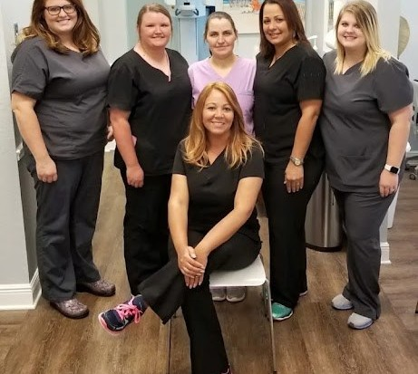
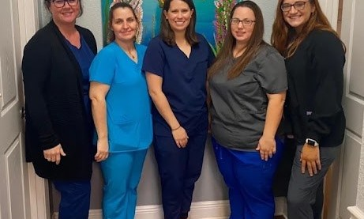
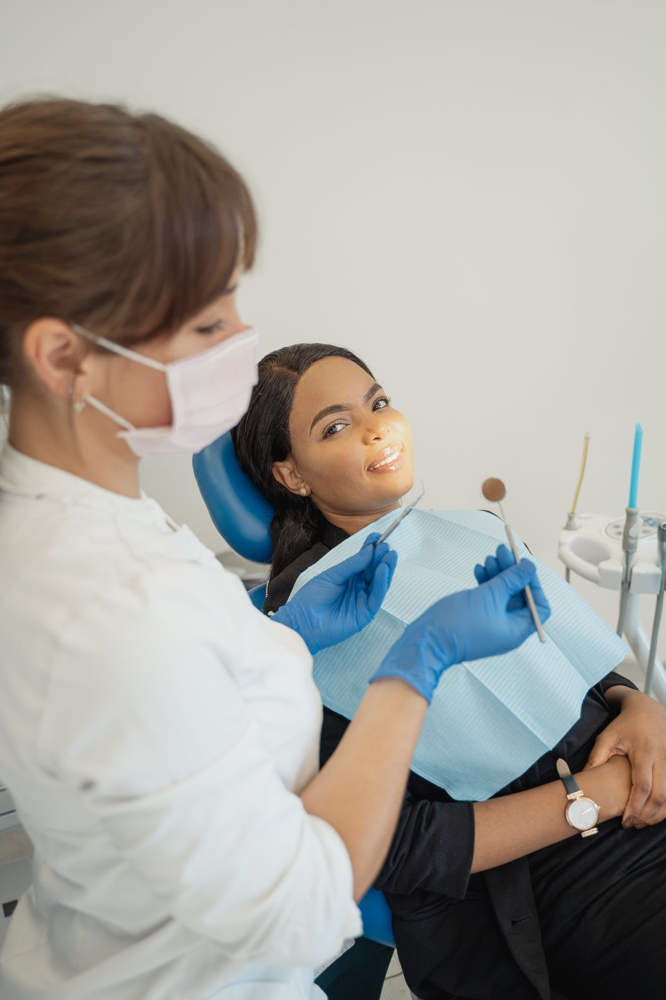

Family Dentistry, Biloxi MS
Dental Analysis Family Dentistry
Full-scope general and cosmetic dentistry in Biloxi, from crowns and bridges to root canals and dentures.
1025 Division Street, Suite F, Biloxi.

Dental services
General dentistry
Cosmetic dentistry
Porcelain crowns
Bridges
Root canals
Dentures
About
Dental Analysis Family Dentistry is a dental office at 1025 Division Street, Suite F, in Biloxi, Mississippi. The practice offers full-scope general and cosmetic dentistry, including porcelain crowns and bridges, root canals, and dentures. Hours are Monday through Thursday, 8:00 AM to 5:00 PM. Call (228) 432-5222 to ask about an appointment.
Appointments
Call (228) 432-5222 to ask about an appointment. The office is at 1025 Division Street, Suite F, in Biloxi.
Gallery


Two photos are real photos of the practice staff, cropped from the practice's own Facebook-post screenshots on its Google Maps listing. The third photo is a labeled stock photo of a dentist treating a patient; it is not a photo of Dental Analysis Family Dentistry.
Visit
Address: 1025 Division Street, Suite F, Biloxi, MS 39530
Hours: Monday through Thursday, 8:00 AM to 5:00 PM.
Phone: (228) 432-5222
Contact
Dental Analysis Family Dentistry serves Biloxi, MS. Questions? Call (228) 432-5222.